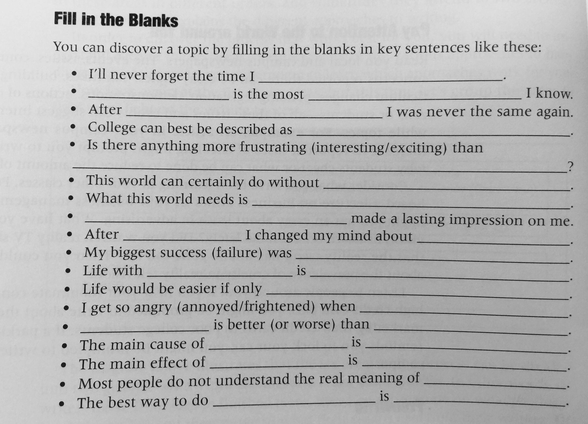
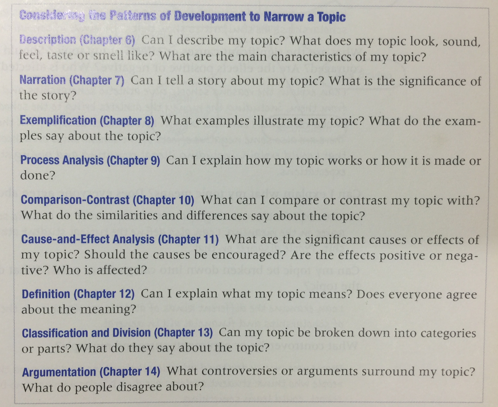
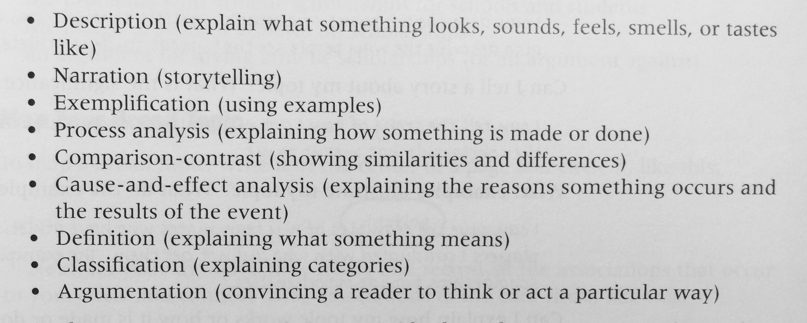
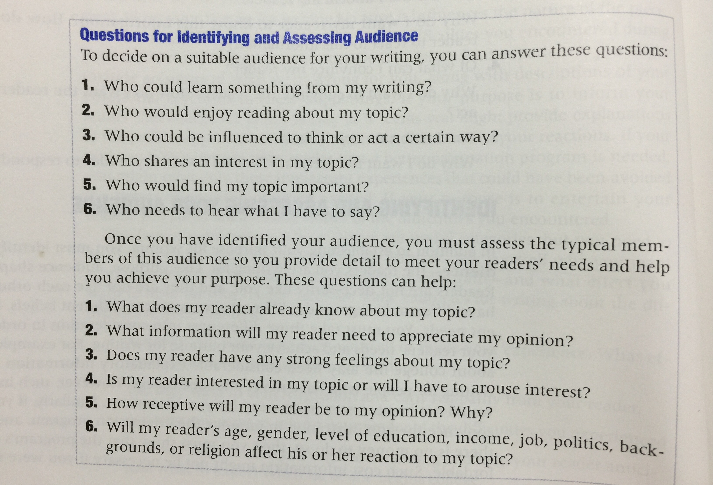
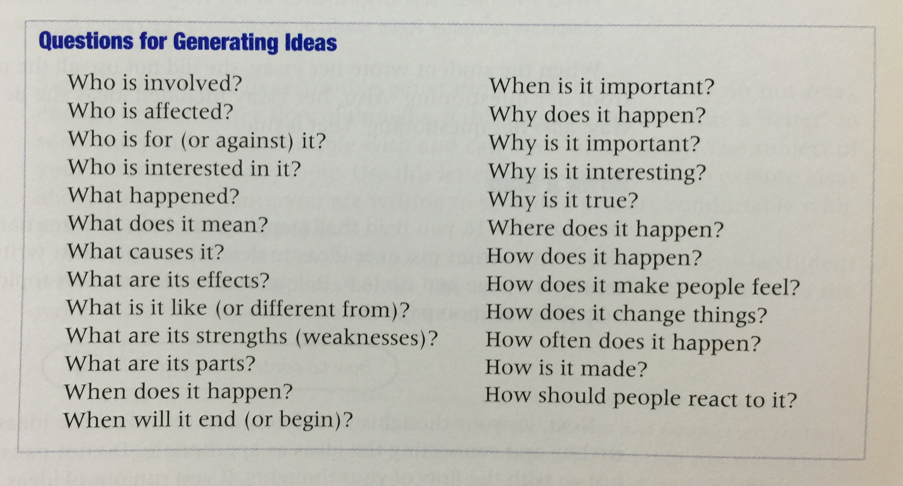
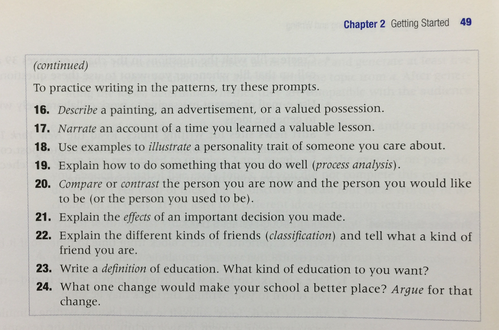
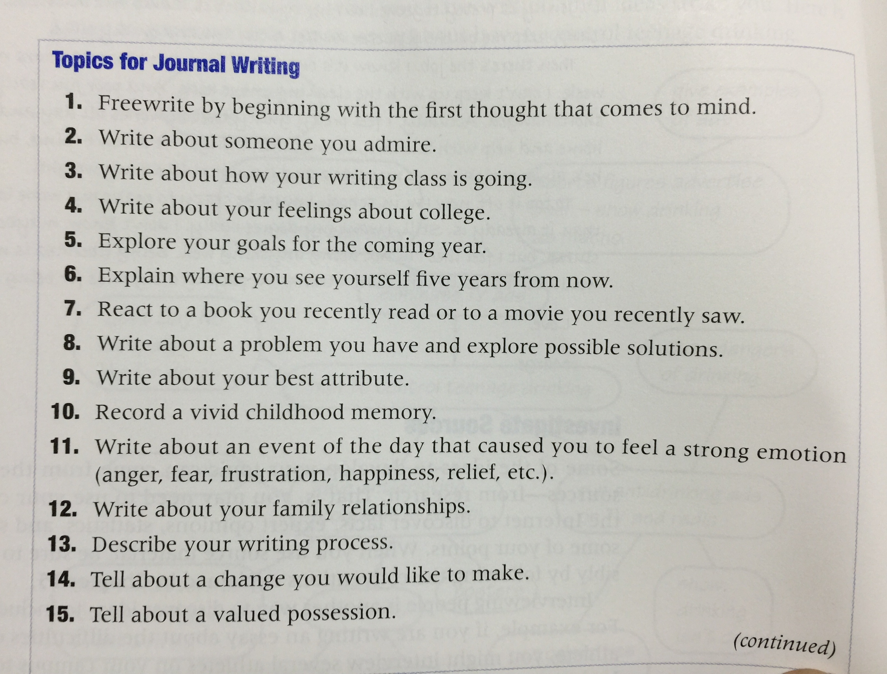
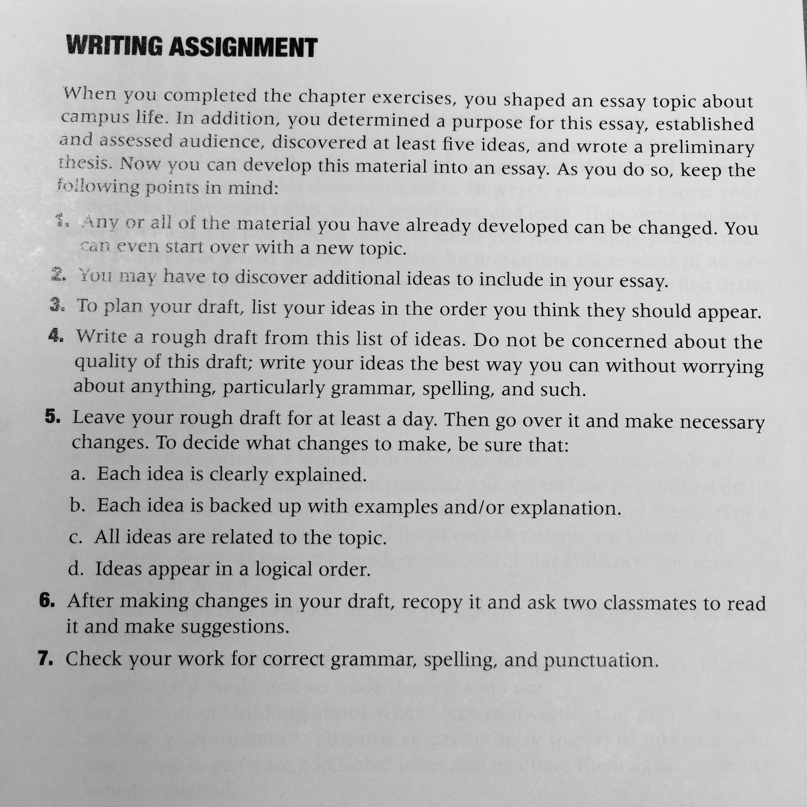
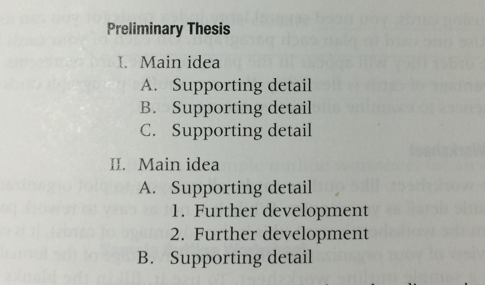
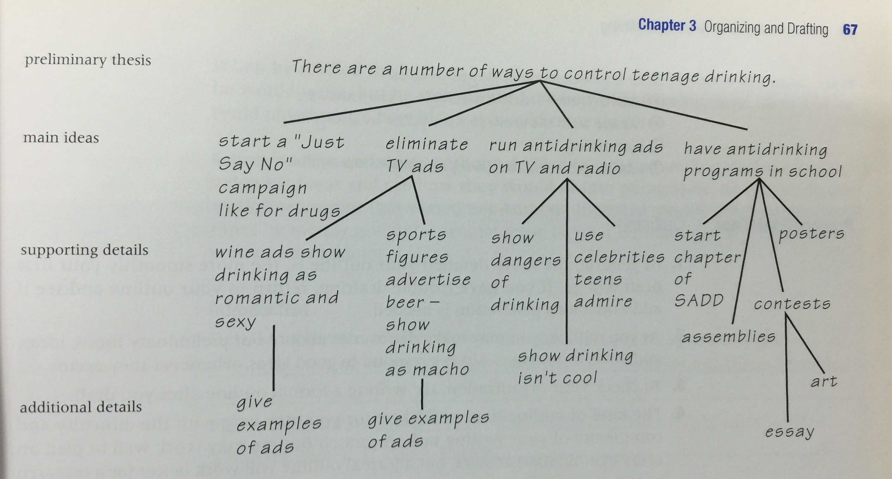

- Chapter 1 The Connection between Reading and Writing
- Chapter 2 Getting Started
- Organizing and Drafting
Chapter 1 The Connection between Reading and Writing
Read Analytically
1. Step 1: Preview the Material
Grasp the whole book. Get some information. Think about the author.
What questions it will answer? What information it will provide? What do you hope it tell you?
2. Step 2: Read thoughtfully
- Thesis, audience and purpose.
- Facts and opinion.
- Make Inferences.
- Make connections(your experience and knowledge). Mark the text.
- Quality.
- Draw conclusion. Mark the text.
3. Step 3: Review and Write for Retention.
- Reread the material you underline or highlighted. Understand it.
- Review and reflect upon your material notes. Ask question.
- Writing is an excellent way to ‘set’ information so you remember it.
Writing a summary
- Underline or list the major ideas in the section.
- Write an opening sentence that include the author’s name, the title of the reading selection, and the thesis.
- After the first use of the author’s full name, refer to the author with his or her last name or with a pronoun.
- You should use a present tense verb with the author’s name.
- Draft the body of the summary by writing in your own words and the style the major ideas you underline or listed.
- If some of the main ideas are hard to express in you own words, quote them, but use quotation sparingly.
- Revise to be sure you have not included ideas that did not appear in the original.
- Check that you have used transitions to ease the flow from point to point, including repeating the author’s name with a present-tense verb.
Sharing Person Reactions and Associations
Evaluating the Author’s Ideas
- Example
- Exercise
Analyzing Visual Content
Chapter 2 Getting Started
- Use your resources.
- Remember writing is a process.
- Think of yourself as a critic and an editor.
- Understand the difference between professional writers and student writers.
The Writing Process
Choosing A Writing Topic
Pay Attention to the World around you
Freewrite(I love this way)
- Do not stop.(5~10 minutes)
- Record everything comes to mind. 
Narrow A Broad Topic
Narrow the topic to something that can be managed in a suitable length.

Write A List
Considering the Patterns of Development

Map Your Topic
Establishing Your Purpose
Four Purpose:
1. To `express` feelings or ideas to the reader and/or relate experiences.
2. To `inform` reader of something.
3. To `persuade` the reader to think or act with a certain way.
4. To `entertain` the reader.
What->Why->How.
This remained me of the book “How can everybody make extrorindary persections”
Identifying And Assessing Your Audience
Like purpose, Audience shapes writing.

Developing Ideas To Develop Your Topic
Idea generation techniques:
- Freewrite
- Write a List
- Answer Question
- Write A Map
- Write a Letter
- Investigate Sources
- Keep a Journal  
Developing A Preliminary Thesis
A thesis is a statement of what an essay is about. Everything you write must relate to the thesis and help prove or explain it.
The Qualities of an Effective Thesis
- State your
topicand youropinionon that topic. - Limit your thesis to one topic and one opinion.
- Avoid broad statements.
- Express your opinion in a specific words.
- Avoid factual statements.
- Write your thesis so it is not an statement.
- Avoid expressings such as “in my opinion”, “I believe”, “I think” and “it seems to me”. 
Organizing and Drafting
Perwriting is a necessary process.
Evulating your idea. Choose those realated to your aduience, topic and opinion, thesis.
Ordering Ideas
Chronological Order
Time order. It’s often used for narration or explain how to do something.
Spatial Order
You use it when you want to describe something.
Progressive Order
Order it according to how compelling it is.
Outlining
- The formal outline
- The outline Worksheet
Introduction
- Details to generate reader interest___
- Preliminary thesis
Parapraph
- Main ideas

- Supporting detalis **Conclusion **
Details to privde closure
The outline tree

Writing Your First Draft
Structuring your essay
- The beginning
- The middle
- body paragraph(Topic sentence)
- The end
The introduction
- Provide Background Information
- Tell a Perinent Story
- Explain Why Your Topic Is Important
- Present Some Interesting Images or Use Description
- Present an Intriguing Problem or Raise a Provocative Question
- Present an Opposing ViewPoint
- Establish Yourself As Someone Knowlegeable About the Topic
- Open with an Attention-Grabbing Statemnet
- Explain your purpose
- Find Some Common Ground to Establish a Bond With Your Reader
- Provide an interesting Question
- Define Something
- Give Relevant Example
Avoid apologizing.
Body Paragraphs
- Topic Sentence
- Placement of the Topic Sentence(first,last)
- Quantities of an Effective Sentence
- Accurately state the main idea of the body paragraph.
- State one main idea.
- State a main related to the thesis.
Supporting details
Effective Supporting details
Provide adequate supporting deatils
To provide adquate deatils, remember to show as well as tell.
Provide relevent supporting details.